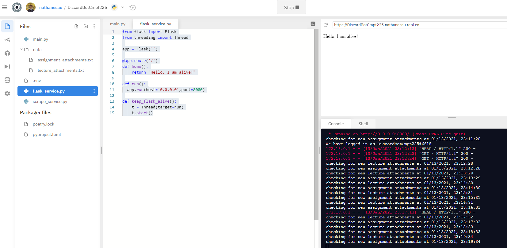
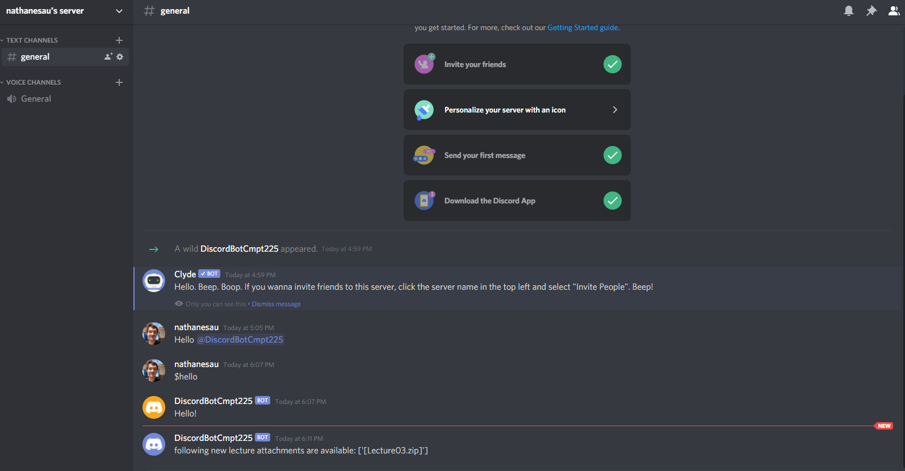

Discord Bot for Automating University
Posted on Mon 13 January 2020 in programming
It's annoying not knowing when professors are going to post assignments or lectures.
Constantly having to refresh the course website and check whether it's been posted. Wouldn't it be nice to be notified immediately after something is posted to the course website? (not all professors send out emails)
Anyway, I wrote a discord bot for this very thing and I will go through the code for it. It is available at https://repl.it/@nathanesau/DiscordBotCmpt225.
Here is the main file (Python):
import os
from flask_service import keep_flask_alive
from scrape_service import keep_scrape_alive
from dotenv import load_dotenv
import discord
# environment variables
load_dotenv(f"{os.path.dirname(os.path.realpath(__file__))}/.env")
# thread 1: flask service
keep_flask_alive()
# thread 2: monitoring service
keep_scrape_alive()
# main thread
client = discord.Client()
@client.event
async def on_ready():
print('We have logged in as {0.user}'.format(client))
@client.event
async def on_message(message):
if message.author == client.user:
return
if message.content.startswith('$hello'):
await message.channel.send('Hello!')
# NOTE: need is read from a .env file
client.run(os.getenv('TOKEN'))
There are three components to the bot:
- A flask component (only needed to keep
repl.italive). I userepl.itto host my bot because it's free. - A scrape component (for scraping the course website and sends message to discord chat using webhook when new attachment found).
- A bot component (not necessary for my purposes, but it is cool)
I also use https://uptimerobot.com to send request to repl.it every 5 min to keep it up. Up time robot allows 50 free monitoring services.
Here is the scraping component (probably the most interesting part):
import os
from datetime import datetime
import time
from bs4 import BeautifulSoup
import urllib.request
from threading import Thread
import requests
BASEDIR = os.path.dirname(os.path.realpath(__file__))
def scrape_lecture_attachments():
page = urllib.request.urlopen(os.getenv('LECTURES_URL'))
soup = BeautifulSoup(page, 'html.parser')
# check for new attachments
attachments = []
links = soup.find_all('a')
for link in links:
if '.zip' in link.text:
attachments.append(link.text)
return attachments
def scrape_assignment_attachments():
page = urllib.request.urlopen(os.getenv('ASSIGNMENTS_URL'))
soup = BeautifulSoup(page, 'html.parser')
# check for new attachments
attachments = []
links = soup.find_all('a')
for link in links:
if '.zip' in link.text:
attachments.append(link.text)
return attachments
def load_lecture_attachments():
with open(f"{BASEDIR}/data/lecture_attachments.txt") as f:
data = f.read()
return [line.strip() for line in data.splitlines() if line.strip()]
def load_assignment_attachments():
with open(f"{BASEDIR}/data/assignment_attachments.txt") as f:
data = f.read()
return [line.strip() for line in data.splitlines() if line.strip()]
def append_new_lecture_attachments(attachments):
with open(f"{BASEDIR}/data/lecture_attachments.txt", 'a') as f:
for attachment in attachments:
f.write(attachment + "\n")
def append_new_assignment_attachments(attachments):
with open(f"{BASEDIR}/data/assignment_attachments.txt", 'a') as f:
for attachment in attachments:
f.write(attachment + "\n")
def run():
while True:
now = datetime.utcnow().strftime("%m/%d/%Y, %H:%M:%S")
print(f"checking for new lecture attachments at {now}")
attachments = scrape_lecture_attachments()
lecture_attachments = load_lecture_attachments()
diff = list(set(attachments) - set(lecture_attachments))
if diff:
msg = "following new lecture attachments are available: " + str(diff)
requests.post(url=os.getenv('WEBHOOK_URL'), data={"content": msg})
append_new_lecture_attachments(diff)
print(f"checking for new assignment attachments at {now}")
attachments = scrape_assignment_attachments()
assignment_attachments = load_assignment_attachments()
diff = list(set(attachments) - set(assignment_attachments))
if diff:
msg = "following new assignment attachments are available: " + str(diff)
requests.post(url=os.getenv('WEBHOOK_URL'), data={"content": msg})
append_new_assignment_attachments(diff)
time.sleep(60)
def keep_scrape_alive():
t = Thread(target=run)
t.start()
I write the attachments to file and cross-reference the current assignments on the course website against the previously found attachments. And I have the WEBHOOK_URL, LECTURES_URL and ASSIGNMENTS_URL in a .env file for security reasons.
Also, here is the flask component:
from flask import Flask
from threading import Thread
app = Flask('')
@app.route('/')
def home():
return "Hello. I am alive!"
def run():
app.run(host='0.0.0.0',port=8080)
def keep_flask_alive():
t = Thread(target=run)
t.start()
That's basically it. Here's what the repl files look like:

And here what the discord chat looks like:

When a new assignment or lecture is posted I will get a notification on my phone.
I really will be the first to know...